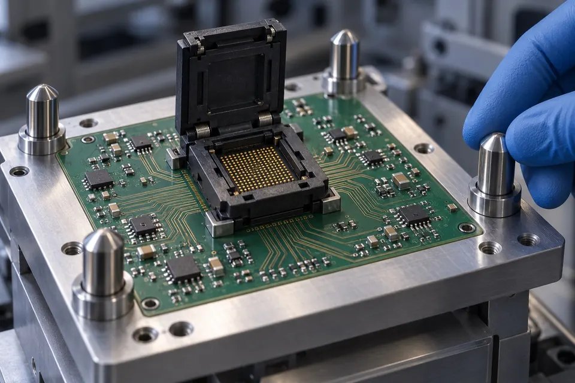

Turnkey Engineering & Integration
Turnkey Integrated Test Cells
Single-vendor accountability: ATE Tester + Automated Handler + Precision Docking + Sockets + 2D/3D Vision.
The Complete Test Cell. We combine the ATE tester, rotary handler, precision docking interface, load board, test socket, and optical inspection into a single turnkey solution with local buy-off.

End-to-End Production Delivery
The Integrated Test Cell Solution.
When an OSAT or IDM procures ATE testers and device handlers from different overseas manufacturers, bringing up a new package line creates coordination overhead. NXTREV engineers, docks, qualifies, and commissions the entire test cell on your production floor with a single local warranty and single-owner support.
One Accountable Local Partner
Tester + Handler + Docking + Tooling
Eliminate finger-pointing between equipment principals. NXTREV assumes single-owner accountability for signal integrity, mechanical repeatability, and production yield.
| Electrical SubsystemATE Test Platform | Mainframe instrumentation providing programmable power supplies, precision SMUs, and digital/analog pin electronics configured to device test requirements.Signal generation, parametric measurement, and test executive control. |
|---|---|
| Coupling SubsystemDocking & Interface | Mechanical hard-docking assembly, Device Interface Board (DIB), contactor sockets, or probe card. Interface selected or engineered for the application.Mechanical docking alignment and repeatable electrical interconnect. |
| Alternative Handling PathsConfig A: Packaged Units | Pick-and-place, turret, gravity, or strip handler with hardware binning. Optional post-test optical check and tape/reel. |
| Alternative Handling PathsConfig B: Wafer Sort Prober | Wafer chuck stepping positioning producing electronic wafer maps, die results, and yield datalogs. |
Concept Illustration (Functional Component Relationships Only): This layout diagrams how testing, interface, and handling subsystems interact. It does not represent a universal configuration, standard turnkey package, or specific installation. All instruments, docking mechanics, automation choices, and inspection options depend on confirmed project scope.
Why one owner
From delivery to verified buy-off.
Accelerated Production Buy-Off
By pre-verifying prober/handler docking, load board mechanical tolerance, and socket contact pressure before delivery, customer qualification cycles drop from months to weeks.
We do not declare done until the integrated test cell passes rigorous correlation, Gage R&R, and yield buy-off on your actual production silicon.
Single Local Point of Contact
No overseas time-zone delays or vendor dispute. NXTREV's field service engineers take complete ownership for line calibration, Gage R&R, and sustaining preventive maintenance.
Based in Muntinlupa City, our field service engineers are positioned to respond rapidly to industrial plants across Laguna, Cavite, Batangas, and Clark.
Rapid Package Conversion Kits
Quick-change kits for handler bowls, tracks, pick heads, and test sockets ensure your plant can repurpose installed capacity across QFN, DFN, SOT, or TO packages with minimal downtime.
Tooling conversion kits allow single handlers to shift between QFN, DFN, SOT, and discrete power packages with under 2-hour changeover times.
Need a printable overview for purchasing or engineering evaluation?
Access our consolidated 2026 Equipment & Solutions Line Card matrix in a clean, print-ready layout.